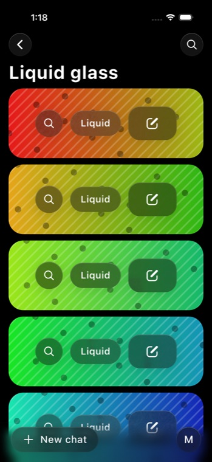
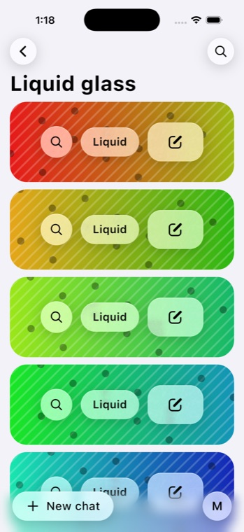
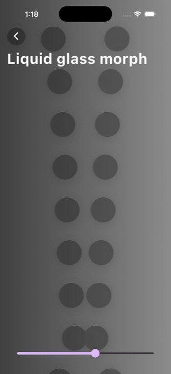
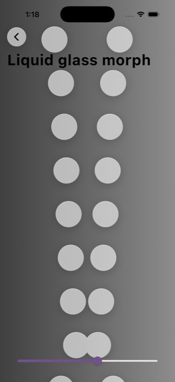

Стекло и производительность
Как устроен LiquidGlass, почему одна плита — это один проход по фону, и как держать 60/120 fps с LiquidGlassGroup.




Цена
Каждая LiquidGlass плита — один офскрин-проход: размытие фона движком + шейдер (преломление на ободке, дисперсия, блик, тень). Это ~0.2 мс на плиту, поэтому стекло — для нескольких заметных элементов (кнопки бара, пилюля, плавающий тулбар), а не для строк списка.
Правила
- Группируйте. Плиты в
LiquidGlassGroupделят один проход (до 8).ChromeBar,LargeTitleHeader,CollapsibleBarуже оборачивают бар в группу — кнопки бара стоят как одна. - Повторяющееся — плоским. У кнопок в списке ставьте
liquid: false: плоская плита рисуется одним примитивом и сохраняет отклик на нажатие. - Не оборачивайте в
Opacity. Плита не должна быть внутри собственного офскрин-слоя; для прозрачности естьLiquidGlass.opacity, для появления —LiquidGlassPresence. - Тяжёлое поддерево под непрозрачным слоем можно «усыпить» через
LiquidGlassSuspend(suspended: true). highQualityдобавляет префильтр размытия для тонких деталей под стеклом — только где это видно.
Слияние плит
LiquidGlassGroup(spacing: 40): плиты ближе 40 pt сливаются в одну форму, пока одна из них нажата, появляется или исчезает — как GlassEffectContainer(spacing:) в SwiftUI.
LiquidGlassGroup(
spacing: 40,
child: Row(children: [
LiquidGlass(width: 60, height: 60, interactive: true, child: Icon(Icons.add)),
LiquidGlass(width: 60, height: 60, interactive: true, child: Icon(Icons.edit)),
]),
)Появление и исчезновение
LiquidGlassPresence(
show: visible,
builder: (context, presence) => LiquidGlass(presence: presence, width: 80, height: 80, child: const SizedBox()),
)Если шейдеров нет
Web, flutter test и устройства без Impeller получают плоскую GlassSurface — внешний вид деградирует, а поведение остаётся прежним.